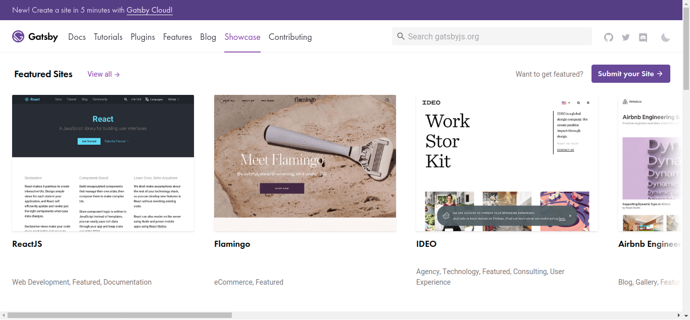
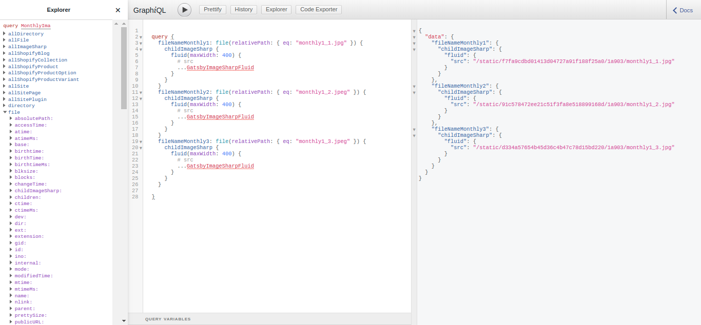

React and Gatsby
Jan 2020 Presentation
Question to the Audience
What is your skill level on React? (i.e. how many projects have you deployed?)
What is Gatsby?
(psst... visit the site... gatsbyjs.org)
Gatsby's origin?
The original prototype was built to solve festival/conference website issues.
Okay but what is it really?
⬇️
⬇️
⬇️
tl;dr: You write code that makes it easier to write code.
Why Use Gatsby
- Incredibly newbie-friendly documentation
- No requests to reload the entire page. Content-swapping.
- Automatic optimization. (lazyload)
- Plugins (up to 5000+)
- Export super fast/SEO friendly websites (Helmet)
- Hotloading - immediate rendering
- Offline/Serviceworker out of the box
Who uses Gatsby?
How does Gatsby deploy to production?
Trick question. YOU DON'T!
- Build command generates pure html/css/js
- Upload anywhere. (github, netlify, contentful, $3 shared server...)
- Netlify + Gatsby (for continuous deployment from public or private repos)
Let's look at the code at talk about:
- Gatsby Develop
- How this data is being pulled
- Hotloading/Devtools
- File Structure
- GraphQL Basics
- styled-components
Next ➡️ GraphQL
What is GraphQL trying to solve?
What is GraphQL trying to solve?
A lot of companies switched from RESTful to GraphQL APIs for internal usage: IBM, Twitter, Walmart Labs, The New York Times, Intuit, Coursera, and the list goes on an on. They claim they like it and they like very much.
Other companies switched not only internal but their external APIs to GraphQL: AWS, Yelp, GitHub, Facebook, and Shopify among others. GitHub went so far as not even bothering with REST API. Their v4 is GraphQL-only.
The GraphiQl editor
Gatsby's future?
- Less crappy image integration
- Better optimization for large websites (5000+ pages)
- Reducing prefetch data (all resources are currently content-hashed)
Final Verdict?
- Gatsby has revolutionized what Static Site Generators are. (https://www.staticgen.com/>)
- Gatsby has a place for small websites. (Portfolio, documentation, small stores)
- Gatsby has a place for sites with open APIs (Headless WordPress)